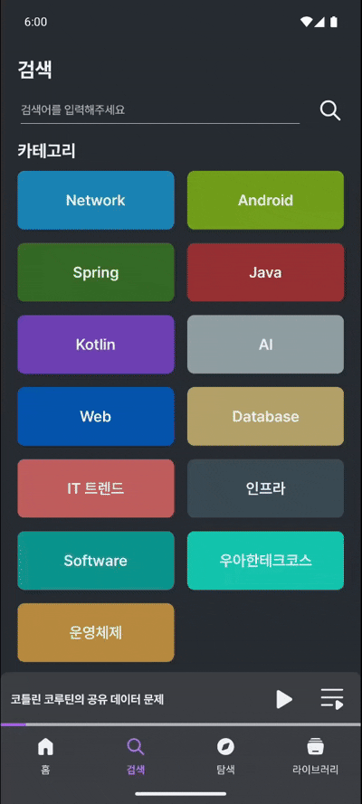
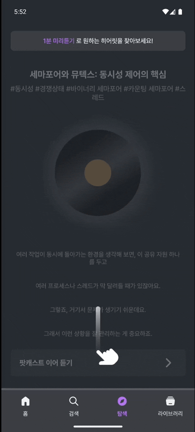
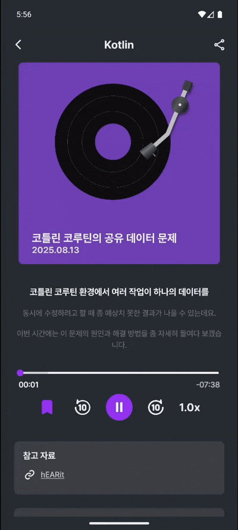

빠르게 변하는 IT
팟캐스트로 쉽게 공부하자!
IT 트렌드와 기술 스택을 쉽게 들을 수 있는 팟캐스트 서비스입니다.
복잡한 문서나 긴 글 대신, 원하는 정보를 들으며 IT 세상을 따라가 보세요.
지금 딱, 당신이 좋아할 콘텐츠!
관심 있는 카테고리의 팟캐스트를 한눈에 보고, 바로 들어보세요.
새로 올라온 팟캐스트부터 즐겨 듣던 콘텐츠까지 놓치지 않고 만나볼 수 있어요.
핵심 CS 지식 & 기술 문서
혼자 공부하기 어려운 CS 지식을 음성으로 쉽게!
Java, Kotlin, TDD 등 다양한 분야를
만나보세요
짧게, 빠르게, 자유롭게!
위아래로 스크롤하며 다양한 팟캐스트를 탐색해보세요.
당신의 취향에 맞는 IT 콘텐츠를 숏폼으로 발견할 수 있습니다.
듣는 재미에 보는 재미까지!
스크립트와 출처를 함께 보며 더 풍성하게 즐겨보세요.
요약과 참고 자료까지 한눈에 확인할 수 있습니다.



